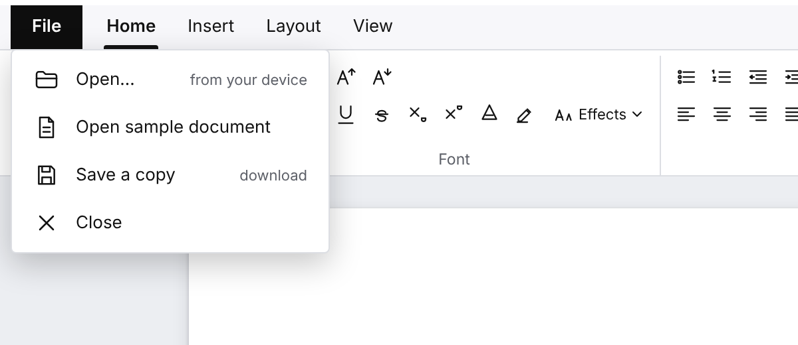
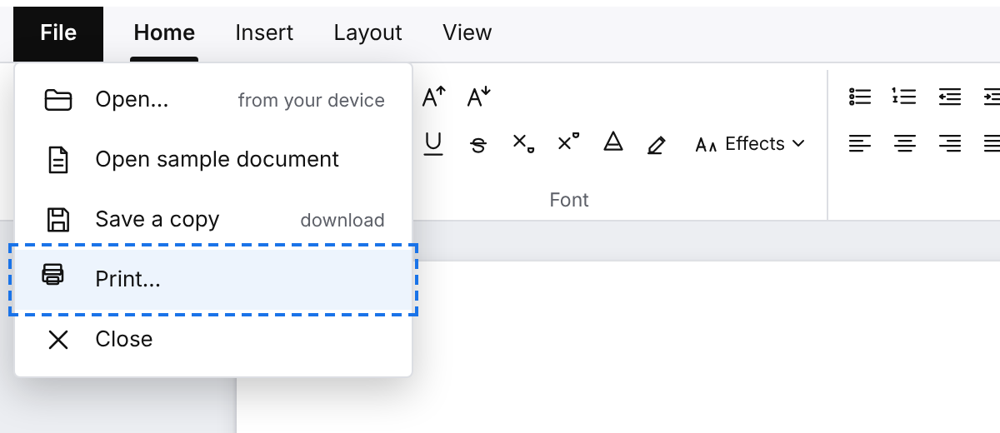
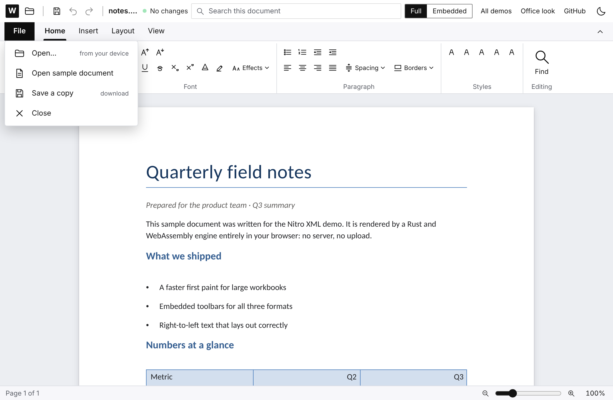
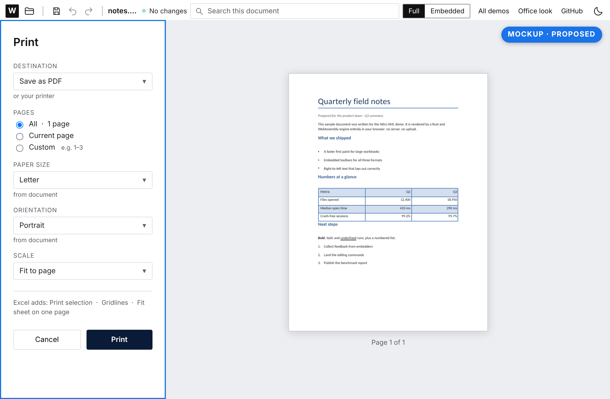

Print or save as PDF (Ctrl+P) with a clean print preview
Approved 2026-11-18 (👍). Queued for the nightly build (host-API v0.2.0 shipped 2026-11-22).
Approve: tap 👍 on the issue · Decline: tap 👎
Close-up of the change




Full screen


Today: the File menu has Open, Save a copy and Close but no Print. Ctrl+P in the document does nothing (console: "unsupported edit op file.print"), and the browser's own Print captures the toolbar, ribbon and status bar around the page.


Mockup: File > Print… (Ctrl+P) opens a print view with destination (Save as PDF or a printer), page range, paper size, orientation and scale, next to a clean preview of the page.
Tap an image to open it full size.
Why
Printing and saving as PDF are among the most common things people do with an Office file, and Word, Excel, PowerPoint, Google Docs and OnlyOffice all have File > Print with a preview. In Nitro, Ctrl+P is already bound to a Print command that isn't implemented, so nothing happens, and printing from the browser menu includes the app's toolbar and ribbon. Rendering each page cleanly for print reuses the page painters Nitro already has.
Definition of done
- File > Print… and Ctrl+P (inside the viewer) open a print view in all three apps; the browser's own Ctrl+P is not triggered.
- The preview and output contain only the document pages (no app chrome), one per sheet of paper, using the file's paper size, margins and orientation; options for page range, scale, and in Excel selection / gridlines / fit sheet on one page.
- Print sends the pages to the browser print dialog, where Save as PDF works; a host API el.print() (and React ref.print()) does the same.
- Printing a 50-page docx and a 30-slide pptx completes without page errors and stays under the memory cap; Playwright test checks page count and that no chrome appears in page.pdf() output.
- Bundle-budget and all required checks green.
Approve: tap 👍 on the issue · Decline: tap 👎